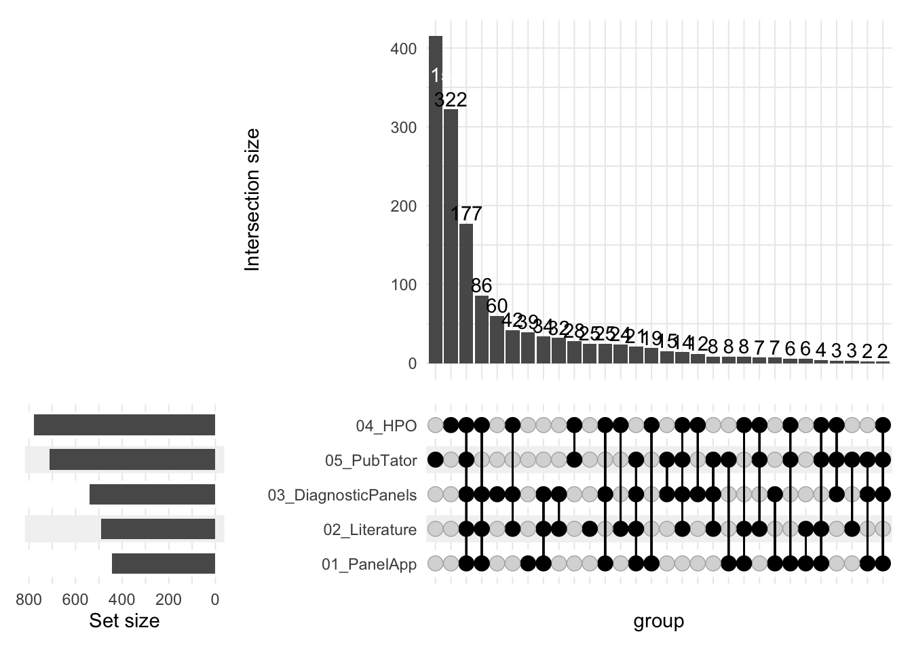

Analyses plots
UpSet plot of merged analyses sources
UpSet plot of the merged analyses.

Bar plot of PanelApp results
Bar plot of the PanelApp analysis.
Bar plot of Literature results
Bar plot of the Literature analysis.
Bar plot of Diagnostic panels results
Bar plot of the Diagnostic panels analysis.
Bar plot of HPO in rare disease databases results
Bar plot of the HPO in rare disease databases analysis.
Bar plot of PubTator results
Bar plot of thePubTator analysis.